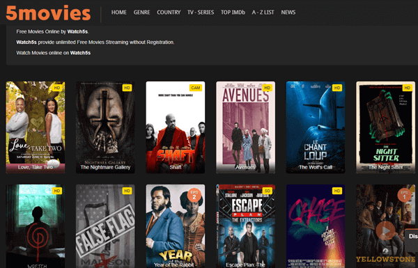

STREAMING
Popular Contents of Streaming
- Gaming
- Movies
- Music
- Cooking
It's all about the gameplay,graphics,review,memes and etc.

DATA ANALYSIS
Demographic Information
Age group: Everyone watch this type of content no matter what their age
Gender: This is composed of Male,Female,LGBTQ but mostly males watch this content
Race: All races
Culture: Mixed cultures since every person can watch this type of content
Education: It reaches elementary kids to high school and college students
Marital Status: Mostly single, but also includes a few people who are married and are in a relationship
Why do people watch gaming content?
People watch this to gain more knowledge on a specific game such as gameplay,graphics,drop rates,tutorial,etc.
This has different category such as a horror,comedy,romance etc.
DATA ANALYSIS
Demographic Information
Age group: Everyone watch this type of content no matter what their age
Gender: This is composed of Male,Female,LGBTQ
Race: All races
Culture: Mixed cultures since every person can watch this type of content
Education: It reaches elementary kids to high school and college students
Marital Status: Single,Married, in a relationship
Why do people watch movie content?
People watch this to relaxed,bond,to enjoy their time,to follow the trends,etc.
This has different category such as pop,rock,hip hop,rap etc.
DATA ANALYSIS
Demographic Information
Age group: Everyone watch this type of content no matter what their age
Gender: This is composed of Male,Female,LGBTQ
Race: All races
Culture: Mixed cultures since every person can watch this type of content
Education: It reaches elementary kids to high school and college students
Marital Status: Single,Married, in a relationship
Why do people listen to music content?
People listen to music for relaxation,to gain energy,etc.
It's all about on how to cook certain kind of dish.
DATA ANALYSIS
Demographic Information
Age: People who watch this are mostly adults
Gender: This is composed of Male,Female,LGBTQ but mostly females watch this
Race: All races
Culture: Mixed cultures since every person can watch this type of content
Marital Status: Single,Married, in a relationship
Why do people watch cooking?
People watch cooking stream to learn a specific recipe or just want to look at foods